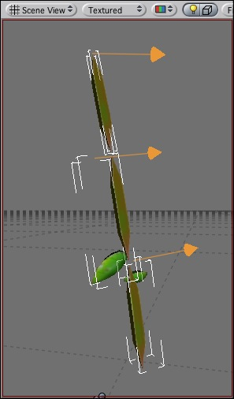

The Hinge Joint groups together 2 rigid bodies, constraining them to move like connected by a Hinge. This joint is great for, well, doors, but can also be used to model chains, etc...
Think of a door. The axis in this case is upwards. The anchor is placed somewhere at the intersection between door and wall.
Properties
| Property: | Function: |
|---|---|
| A reference to another rigid body this hinge connects to. If not set, the hinge connects the object to the world. | |
| The Position of the anchor around which the body swings. The Position is defined in local space. | |
| The Direction of the axis around which the body swings. The Axis is defined in local space. | |
| Spring makes the rigid body attempt to stay in a specific angle compared to its connected body. | |
| The force the object asserts to move into the position. | |
| the higher this value, the more the object will slow down. | |
| Target angle of the spring. The spring pulls towards this angle measured in degrees. | |
| The motor makes the object spin around. | |
| The speed the object tries to attain. | |
| The force applied in order to attain the speed. | |
| If enabled, the motor is never used to brake the spinning, only accelerate it. | |
| Limits are stops that keeps the rotation rigidbody inside some limits | |
| The lowest angle the rotation can go. | |
| The highest angle the rotation can go. | |
| How much the object bounces when it hits the minimum stop. | |
| How much the object bounces when it hits the maximum stop. | |
| The force that needs to be applied for this joint to break. | |
| The torque that needs to be applied for this joint to break. |
Details
|  |
Hints
- Use the Break Force in order to make dynamic damage systems. This is really cool as it allows the player to smash a door by blasting it with a rocket launcher OR running into it with a car.